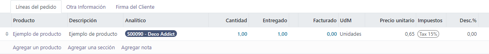
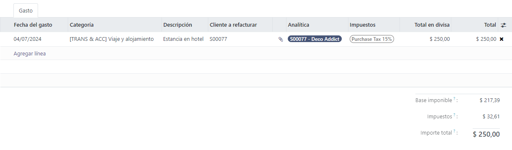

Facturación por tiempo y materiales¶
Por lo general, la facturación por tiempo o materiales se utiliza cuando no es posible estimar con precisión el tamaño de un proyecto o cuando sus requisitos pueden cambiar.
Esto es diferente a un contrato de precio fijo, cuando un cliente acepta pagar un total especificado para el cumplimiento del contrato, sin importar lo que se deba pagar a los empleados, subcontratistas, proveedores, etc.
La aplicación Ventas de Odoo puede facturar por tiempo y otros gastos (por ejemplo, transporte, alojamiento), así como compras necesarias para cumplir con una orden.
Configuración de aplicación y ajustes¶
Primero, para llevar un seguimiento preciso del progreso de un proyecto, las aplicaciones Proyecto y Contabilidad de Odoo deben estar instaladas.
Vaya al para instalar la aplicación Proyecto. Busque el cuadro con la aplicación Proyecto en la página Aplicaciones y haga clic en Activar. La página se actualizará de forma automática y volverá al tablero principal de Odoo, allí aparecerá la aplicación Proyecto y podrá acceder a ella.
Repita el mismo proceso para instalar la aplicación Contabilidad.
Después de la instalación, haga clic en el icono de la aplicación Contabilidad desde el panel principal de Odoo y vaya a . En la página de Ajustes, vaya a la sección análisis y asegúrese de que la casilla junto a Contabilidad analítica esté marcada.
Luego, haga clic en guardar para guardar todos los cambios.
Luego, vaya al . En la página Ajustes, en la sección de gestión del tiempo, asegúrese de marcar la casilla junto a la función hojas de horas.
Luego, haga clic en guardar para guardar todos los cambios.

Configuración del producto de servicio¶
La función hojas de horas en la aplicación Proyecto permite facturar por el tiempo dedicado en un proyecto, pero solo cuando se hayan realizado las siguientes configuraciones de producto.
Importante
La facturación por tiempo dedicado en un proyecto solo es posible con productos que tengan servicio establecido como tipo de producto en su formulario de producto.
Si desea configurar un producto de servicio, primero vaya a la aplicación . En la página Productos, seleccione el producto de servicio deseado para configurarlo, o haga clic en nuevo para crear un nuevo producto.
Desde el formulario del producto, en la pestaña información general, establezca el tipo de producto en servicio. Luego, abra el menú desplegable en el campo política de facturación y seleccione según las hojas de horas.
A continuación, desde el menú desplegable crear en orden, seleccione proyecto y tarea. Esta configuración indica que, cuando se cree una orden de venta con este producto de servicio específico, también se creará un nuevo proyecto y tarea en la aplicación Proyecto.

Nota
También puede elegir la opción tarea desde el menú desplegable crear en orden. Si elige tarea debe seleccionar un proyecto existente en el que aparecerá la tarea en el campo proyecto, que solo aparece si se elige tarea en el campo crear en orden.
Adición del tiempo dedicado a la orden de venta¶
Después de configurar correctamente un producto de servicio con la política de facturación correcta y las opciones de creación de órdenes, es posible agregar el tiempo dedicado a una orden de venta.
Si desea verlo en acción, vaya a la aplicación para abrir un formulario vacío de cotización. Luego, agregue un cliente, y en la pestaña líneas de la orden, haga clic en agregar un producto, y seleccione el producto de servicio configurado correctamente del menú desplegable.
A continuación, haga clic en confirmar para confirmar la orden.
Después de confirmar la orden de venta, aparecerán dos botones inteligentes en la parte superior del formulario de orden: Proyectos y Tareas.
Si se hace clic en el botón inteligente proyectos, verá el proyecto específico relacionado con esta orden de venta. Si se hace clic en el botón inteligente tareas, verá la tarea específica del proyecto relacionada con esta orden de venta. Ambos también son accesibles en la aplicación Proyecto.
Si desea agregar el tiempo dedicado a una orden de venta, haga clic en el botón inteligente tareas.
En el formulario de tarea, seleccione la pestaña hoja de horas. Desde la pestaña hoja de horas puede asignar empleados para que trabajen en el proyecto, también se puede añadir el tiempo que dedican a la tarea, por los empleados o por la persona que creó la orden de venta.
Si desea agregar un empleado y su tiempo dedicado a la tarea, haga clic en agregar una línea en la pestaña hoja de horas. Luego, seleccione la fecha y el empleado correspondiente. También existe la opción de agregar una breve descripción del trabajo realizado durante este tiempo en la columna descripción, pero no es obligatorio.
Por último, ingrese la cantidad de tiempo dedicado en la tarea en la columna horas dedicadas y haga clic para completar esa línea en la pestaña hoja de horas.
Nota
El tiempo ingresado en la columna horas dedicadas se refleja inmediatamente en el campo tiempo asignado (ubicado cerca de la parte superior del formulario de la tarea) en forma de porcentaje, que refleja cuántas horas de trabajo asignadas en total se han completado hasta ahora.
Esa misma información se encuentra como horas numéricas en los campos horas dedicadas y horas restantes, ubicados en la parte inferior de la pestaña hoja de horas.

Repita este proceso para todos los empleados y horas que se hayan trabajado en el proyecto.
Factura del tiempo dedicado¶
Una vez que se hayan agregado todos los empleados necesarios y el tiempo dedicado a la tarea del proyecto, regrese a la orden de venta para facturar al cliente por esas horas. Para ello, haga clic en el botón inteligente orden de venta en la parte superior del formulario de la tarea, o regrese a la orden de venta mediante los enlaces de navegación, ubicados en la parte superior izquierda de la pantalla.
De nuevo en el formulario de orden de venta, podrá ver el tiempo que se agregó a la tarea en la pestaña líneas de la orden (en la columna entregado) y en el nuevo botón inteligente horas registradas en la parte superior de la orden de venta.
Si desea facturar al cliente por el tiempo dedicado en el proyecto, haga clic en crear factura y seleccione factura normal en la ventana emergente crear facturas. Luego, haga clic en crear borrador de factura.
Esto hará que se muestre un borrador de factura del cliente, con todo el trabajo realizado en la pestaña líneas de factura.
Truco
Preste atención a la columna distribución analítica en la factura del cliente, ya que esa información es necesaria para asegurar que otras tareas de facturación de tiempo/material se completen correctamente.
Haga clic en confirmar para confirmar la factura y continuar con el proceso de facturación.
Configuración de Gastos¶
Para poder realizar un seguimiento y facturar los gastos relacionados con una orden de venta, debe instalar la aplicación Gastos de Odoo.
Si desea instalar la aplicación Gastos, vaya al . Luego, en la página Aplicaciones, busque el bloque de la aplicación Gastos y haga clic en activar.
La página se actualizará de formar automática y volverá al tablero principal de Odoo, donde ahora podrá ver la aplicación Gastos.
Agregar gastos a órdenes de venta¶
Si desea agregar un gasto a una orden de venta, primero vaya a la aplicación . Luego, desde el tablero principal de Gastos, haga clic en , lo que revela un formulario vacío de gasto.
En el formulario de gastos, añada una descripción del gasto (por ejemplo, estancia en hotel, boleto de avión). A continuación, en el campo categoría, seleccione la opción adecuada del menú desplegable (por ejemplo, comidas, millas, viaje y alojamiento).
Nota
Puede agregar y modificar categorías de gastos desde .
Luego, ingrese el importe total del gasto en el campo total, así como cualquier impuesto incluido que se pueda aplicar. A continuación, asegúrese de seleccionar el empleado correcto y designe quién pagó el gasto en el campo pagado por: el empleado (por reembolsar) o la empresa.
A continuación, en el campo cliente al que se le va a volver a facturar, seleccione la orden de venta correspondiente del menú desplegable. Luego, seleccione esa misma información de la orden de venta en el campo distribución analítica.
Nota
El campo distribución analítica solo tendrá la orden de venta correspondiente como opción si la orden de venta contiene un producto de servicio que se factura según la hoja de horas, el objetivo o las cantidades entregadas.
Si hay algún recibo que se deba cargar y vincular al gasto, haga clic en el botón adjuntar recibo y suba los documentos necesarios al gasto. No es obligatorio pero puede afectar si se aprueba un gasto o no.
Cuando se haya ingresado toda la información, haga clic en crear reporte para crear un reporte de gastos que detalle toda la información de gastos que acaba de ingresar.

Después aparece la opción Enviar al gerente para que realice la aprobación. Una vez hecha, aparece Reportar en el siguiente recibo de nómina.
Para ejemplificar este flujo completo, seleccione Enviar al gerente, luego el gerente debería hacer clic en Aprobar para aprobar este gasto y después en Publicar asientos contables para publicar este gasto en el diario de contabilidad.
Gastos de factura¶
Para incluir un gasto en la orden de venta y facturárselo al cliente, vaya a la orden de venta relacionada. Puede acceder a ella desde la aplicación o desde el reporte de gastos en la aplicación . Una vez que se encuentre en el reporte de gastos, haga clic en el botón inteligente Órdenes de venta ubicado en la parte superior de la página.
Si vinculó el reporte de gastos a la orden de venta, el gasto recién configurado ahora tiene su propia línea en la pestaña Líneas de la orden y se puede facturar al cliente.

Para facturar al cliente por el gasto en la orden de venta, haga clic en Crear factura, seleccione Factura normal en la ventana emergente para Crear facturas y después haga clic en Crear borrador de factura.
Aparecerá el borrador de factura al cliente para el gasto. Después puede continuar con el proceso de facturación de forma habitual.
Configuración de Compra¶
Para poder facturar a un cliente por las compras realizadas en una orden de venta, debe tener instalada la aplicación Compra.
Vaya al para instalar la aplicación Compra. Busque el cuadro con la aplicación Compra en la página Aplicaciones y haga clic en Activar. La página se actualizará de forma automática y volverá al tablero principal de Odoo, allí aparecerá la aplicación Compra y podrá acceder a ella.
Agregar una compra a la orden de venta¶
Para poder agregar una compra a una orden de venta, es necesario que primero cree una orden de compra. Para crearla, vaya a la . Esta acción abrirá un formulario de orden de compra que deberá completar.
Agregue un proveedor a la orden de compra. Después, en la pestaña de Productos, haga clic en el menú desplegable opciones adicionales de columna que está representado por dos líneas horizontales con puntos y está ubicado a la derecha de los encabezados de columna. Seleccione Distribución analítica en ese menú desplegable.

Después de agregar la columna Distribución analítica a los encabezados en la pestaña de Productos del formulario de la orden de compra, agregue los productos a la orden de compra. Para esto, haga clic en Agregar un producto y seleccione uno con el menú desplegable. Repita este paso para todos los productos que desee agregar.
Importante
Para facturar una compra de forma adecuada en una orden de venta, el producto en la orden de compra debe estar configurado como Puede ser un gasto, tener una política de facturación de tipo Cantidades entregadas y tener la opción Al costo seleccionada en el campo Volver a facturar los gastos en su formulario de producto.

Luego, seleccione la Distribución analítica apropiada asociada con la orden de venta a la que está relacionada esta orden de compra. Haga clic en el campo vacío Distribución analítica para abrir la ventana emergente Analítica.
Seleccione la distribución analítica asociada con la orden de venta a facturar por la compra desde el menú desplegable Departamentos.
Una vez que haya completado toda la información en la pestaña Productos de la orden de compra, debe confirmar la orden. Haga clic en Confirmar orden y luego, después de recibir los productos, haga clic en Recibir productos. Estas acciones crearán un formulario de recepción.
Nota
Si debe ingresar los números de serie o de lote antes de validar la recepción de los productos, vaya al formulario de recepción y haga clic en el icono de detalles que está representado por cuatro líneas horizontales. Se encuentra en el extremo derecho de la línea del producto.
Al realizar la acción anterior, se abrirá la pestaña Operaciones detalladas, allí agregue los números de lote y serie y las cantidades hechas, si es necesario. Al terminar, haga clic en Confirmar.
Haga clic en el botón correspondiente para validar la orden de compra.
A continuación, vuelva a la orden de compra con los enlaces de las migas de pan que se encuentran en la parte superior de la página. Haga clic en Crear factura para crear una factura de proveedor que pueda facturar al cliente en la orden de venta adjunta.
Nota
Antes de confirmar debe ingresar una fecha de factura en el borrador de la factura de proveedor. Si no proporciona una fecha de factura aparecerá una ventana de error que le pedirá que ingrese esa información, de lo contrario no podrá realizar la confirmación.
Haga clic en Confirmar para confirmar la factura del proveedor. Esta se agregará de forma automática a la orden de venta, allí se puede facturar directamente al cliente relacionado.
Facturar una compra¶
Para facturar a un cliente por una compra en una orden de venta, primero agregue la compra a la orden de venta y después vaya a la orden de venta correspondiente en la aplicación .
En la orden de venta adjunta a la orden de compra, el producto comprado ahora tiene su propia línea de producto en la pestaña de Líneas de la orden y, además, está listo para ser facturado.

Para facturar la compra al cliente, haga clic en Crear factura, seleccione Factura normal en la ventana emergente para Crear facturas y después haga clic en Crear borrador de factura.
Esta acción abre el borrador de la factura del cliente con el producto recién agregado de la orden de compra en la pestaña Líneas de factura.

Para completar el proceso de facturación, haga clic en Confirmar para confirmar la factura y luego en Registrar pago dentro del formulario emergente Registrar pago.